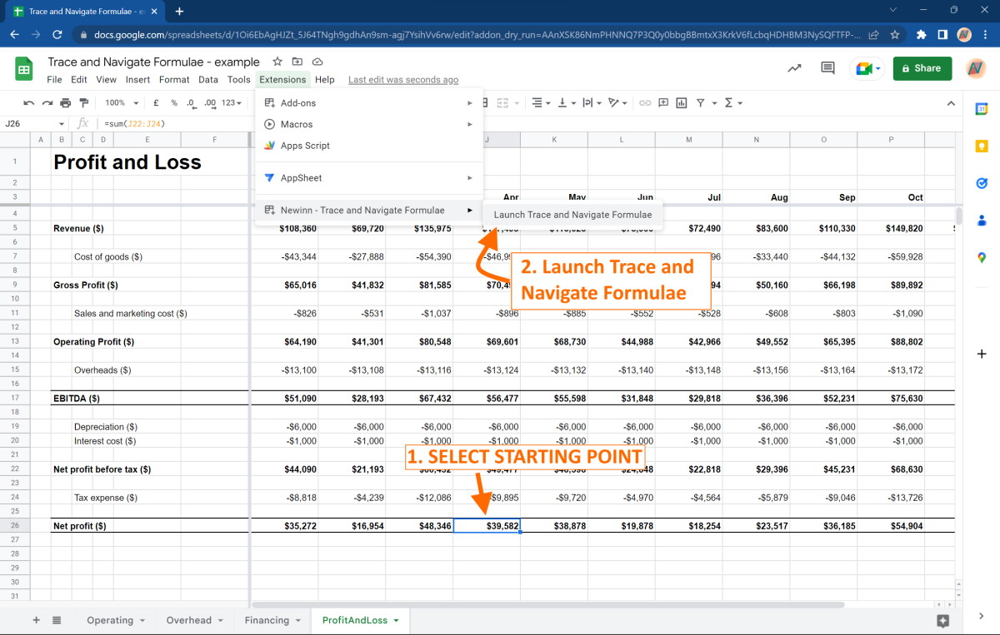
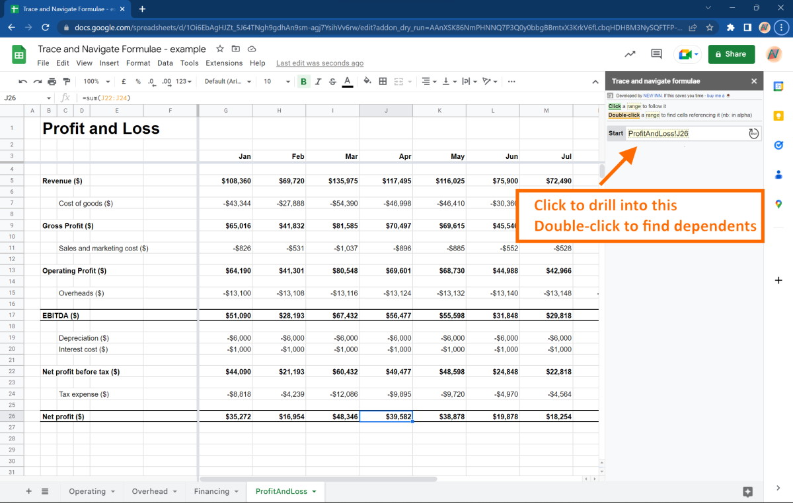
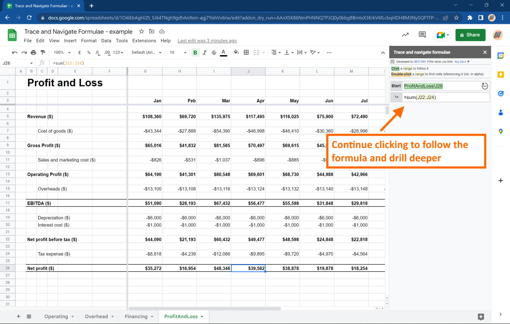
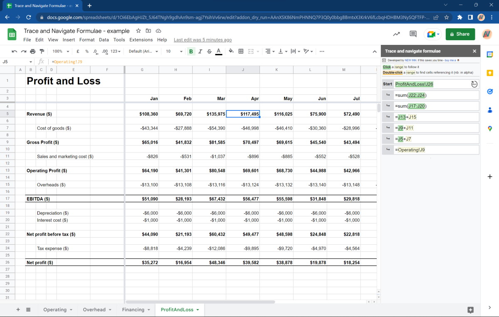

This add-on will enhance your experience with Google Spreadsheets by providing an intuitive way to navigate through formulae and ranges. This allows you to understand your spreadsheets and find bugs faster.
It brings 'Trace Dependents' and 'Trace Precedents', which are familiar to Excel users, into Google Sheets a more user-friendly way. And it allows for unlimited 'drilling' into, and out of, a formula.
The app is designed to be faster and more reliable than similar apps on the market.
Importantly, it does not store any user data outside of the user's computer, ensuring the continued privacy and security of the data on your spreadsheets.
Current features
- Trace into precedent ranges that are on the same worksheet (e.g. "=B5")
- Trace into precedent ranges that are on different worksheets (e.g. "=B5+Sheet2!A2")
- Trace into precedent ranges that are names (e.g. "=Price*Quantity")
- Trace the direct dependents of a cell (in alpha mode) (e.g. if C3 = sum(A1, A2, A3, A4, A5), then include C3 as a dependent of each of them)
Upcoming features
- Trace the dependents of a cell that are specified within a range (e.g. if C3 = sum(A1:A5), then include C3 as a dependent of A3)
Never features
- Trace across indirect references (via INDIRECT, OFFSET, etc.) (e.g. successfully navigating through =OFFSET(A1,1,4,1,3)
- Trace across different workbooks (e.g. successfully navigating through =IMPORTRANGE(url, "Sheet1!A1"))
Instructions
Step 1: Select the cell you want to start navigating from and run the tool

Step 2: Click on the starting range to drill into it.
OR Double-click on the starting range to find dependents (i.e. others cells that refer to it)
OR Double-click on the starting range to find dependents (i.e. others cells that refer to it)

Step 3: You can continue to click through the subsequent ranges in each formula to drill even deeper.
You can also double-click to start finding depdenets at any point as well.
You can also double-click to start finding depdenets at any point as well.

Step 4: You can even navigate to other sheets and to named ranges. The levels are infinite.
